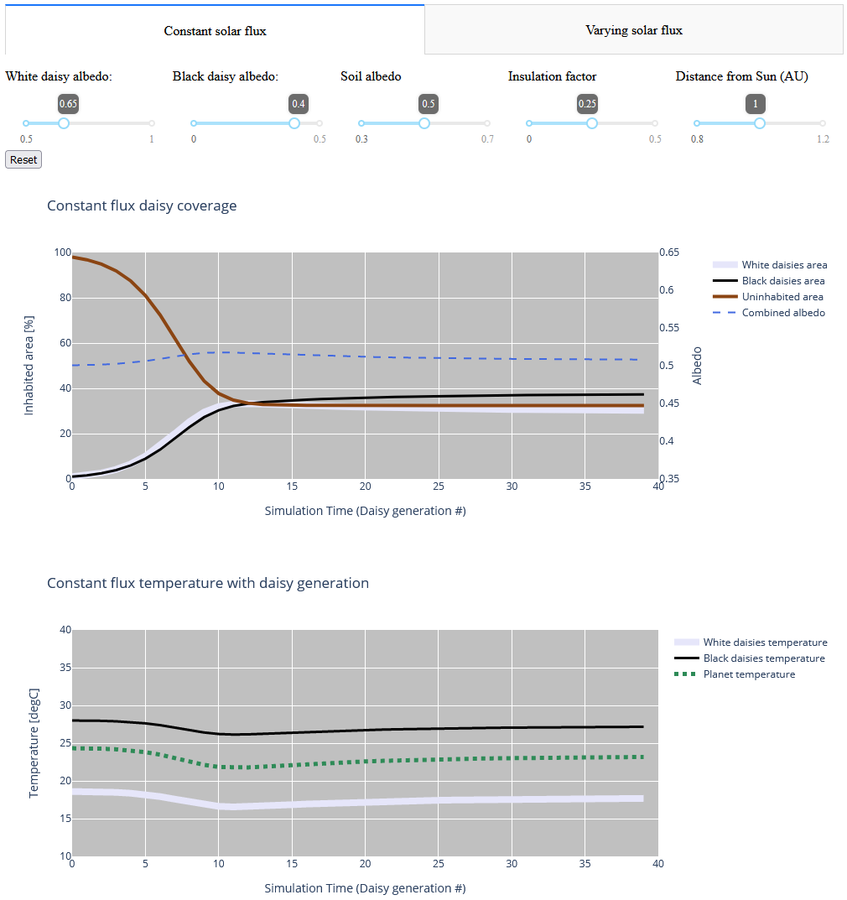

EOSC 310
Contents
EOSC 310#
Official course description#
The Earth and the Solar System: The Earth as a planet: its composition, internal dynamics, and surface evolution. Rotation, magnetic field, plate tectonics, earthquakes, volcanoes. The ocean, atmosphere, and biosphere as components of a varying geo-environment. Not for credit in the Faculties of Science and Applied Science. No background in science or mathematics is required.
Links: >Home, >UBC Calendar, >ubcexplore.
OCESE project objectives#
Enable students to “play” with the “daisy world” model and explore associated concepts.
Actions taken#
Dashboard app Daisyworld was developed by Teaching Assistant F. Rossmann and deployed during the Fall 2021 term. It’s description is:
The interactive Daisyworld model plots the evolution of (a) the equilibrium temperature of the planet’s surface and (b) the proportion of the planetary surface is populated by daisies, all as a function of time in units of “generations” of daisies).
Part 1 (Tab 1) considers a planet orbiting a star that is outputting a constant solar flux with time.
Part 2 (Tab 2) considers how the equilibrium state of the planet changes when the amount of solar energy absorbed by the planet changes with time.
Using the sliders you can adjust the planet’s distance from the Sun (part 1 only), the albedos of white and black daisies, the albedo of the bare planetary surface, and the planet’s insulation factor to explore how each factor will influence the planetary climate response.
The app looks like this:
{kind=link}
Students’ experiences#
Feedback from students included comments such as:
“I enjoyed having the ability to directly customize different settings and parameters for the planet, allowing us to visualize the effects different amounts of sunlight can have on its albedo and habitation.”
“As a hands-on learner, it helped me understand the concepts more, as opposed to just reading about the different effects of sunlight on habitability in a textbook or paper.”
“If it’s possible to implement, it would be great to have a visualization of the planet with the various percentages of daisy coverages for the future, besides having just the graph lines.”
Costs#
The dashboard was developed by a keen teaching assistant. This should take only a week or so of time since all OCESE dashboards are in the public domain and repositories can be viewed for inspiration and programming tactics.
Lessons Learned#
The initial interest in producing this dashboard app came from a Teaching Assistant who was keen to learn how to make these. Subsequent instructors did not all employ the dashboard in their teaching. However, a new version of the course is being developed and it is expected that this rennovation will incorporate many more opportunities for students to explore and “play” with concepts using interactive resources of various types.